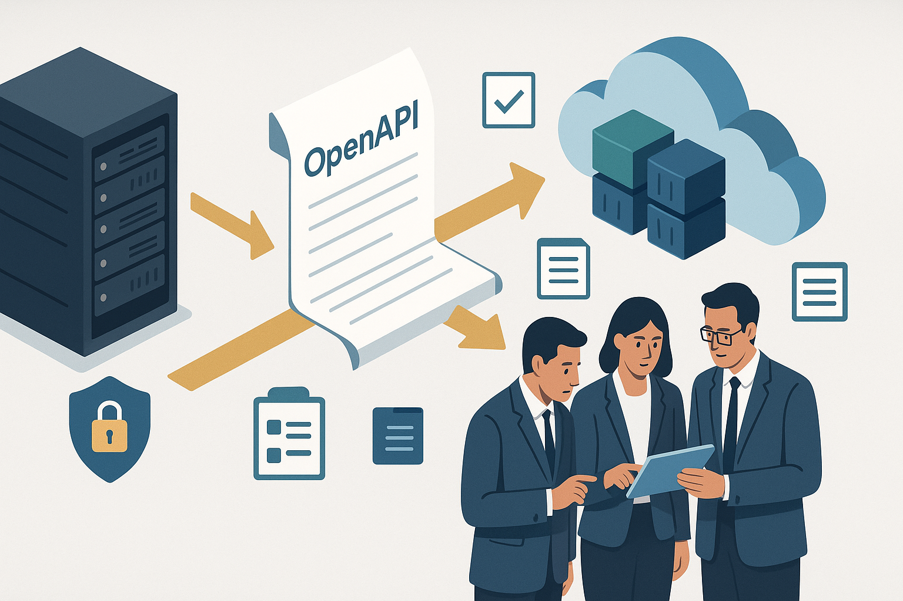
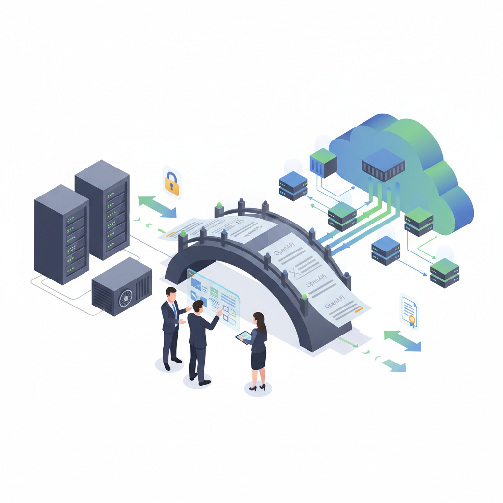

Abrir caminhos: como tornar aplicações legadas mais abertas, seguras e sustentáveis
Resumo executivo
Empresas com sistemas legados enfrentam, hoje, um dilema estratégico: manter integrações presas a plataformas proprietárias que limitam a inovação; ou investir em esforços de modernização que reduzem dependência, abrem o ecossistema e criam vantagens competitivas. Este artigo explica, em linguagem clara e direta, por que a adoção de padrões abertos para APIs é uma mudança de tecnologia e, sobretudo, uma mudança de risco, governança e oportunidade de negócio. Apresentamos uma narrativa realista, vantagens mensuráveis, abordagem recomendada e próximos passos pragmáticos para executivos e decisores.

Figura 1 — visão conceitual: ponte entre sistemas legados e a nuvem (OpenAPI).
Uma história para começar
Imagine uma grande instituição do setor de seguros que, ao longo de uma década, consolidou seus canais digitais e integrações por meio de uma plataforma proprietária de API management. Cada nova integração, cada parâmetro específico introduzido para atender a demandas legais, foi resolvida com customizações na plataforma. No começo, era eficiente: rápido de entregar, com pouco atrito entre times. Com o tempo, porém, a organização passou a depender fortemente dessa solução. Novos fornecedores exigiam formatos diferentes, testes acabavam sendo caros e demorados, e atualizações da plataforma eram um risco de parada.
Quando uma grande mutação regulatória exigiu mudanças rápidas nas mensagens trocadas com os parceiros, a empresa percebeu dois problemas simultâneos: a complexidade técnica se traduziu em custo e lentidão, e a dependência da plataforma limitou a abertura para novos canais e provedores. A solução encontrada foi pragmática: migrar os contratos de integração para um padrão aberto e reorganizar o inventário de APIs. O objetivo não era substituir tecnologia por tecnologia, mas separar preocupações: os contratos são padronizados, segundo normas abertas; a plataforma passa a ser uma peça substituível no ecossistema.
Por que isso importa — impacto para o negócio
- Redução do risco de vendor lock-in: ao padronizar contratos em formatos abertos, a organização não fica “presa” a um único fornecedor para gestão, publicação ou transformação de APIs.
- Agilidade e interoperabilidade: novos parceiros e fornecedores conseguem integrar-se com menos esforços, já que o padrão é compreendido universalmente por ferramentas modernas.
- Transparência e governança: padrões abertos facilitam auditoria técnica e compatibilidade com requisitos regulatórios e de segurança.
- Otimização de custos: com artefatos padronizados, testes automatizados e pipelines de CI podem ser implementados, reduzindo horas de trabalho manual e retrabalho.
O que significa migrar contratos de integração
Quando falamos de “migrar contratos”, não estamos falando apenas de converter arquivos. Trata-se de uma atividade com três dimensões:
- Técnica: transformar artefatos (por exemplo, configurações exportadas de uma plataforma proprietária) para um formato aberto e documentado (OpenAPI/Swagger), assegurando que as operações, modelos e contratos semânticos sejam preservados.
- Processual: definir como novos contratos são aprovados, versionados e publicados, com regras claras de backward compatibility e testes de integração.
- Organizacional: atribuir responsabilidades (donos de API), rotinas de revisão e critérios de aceitação para que a mudança perdure.

Figura 2 — arquitetura simplificada, testes e governança.
Abordagem recomendada: fases práticas e riscos controlados
A migração deve ser executada por fases com entregas mensuráveis. Propomos um roteiro pragmático:
- Inventário e classificação (1–2 semanas): catalogar todas as integrações, suas versões e dependências. Identificar APIs críticas por volume, sensibilidade dos dados e área de negócio.
- Normalização automática (2–4 semanas): aplicar ferramentas e scripts para converter contratos exportados da plataforma legada em artefatos OpenAPI. Essa etapa gera o trabalho repetível e auditável (artefatos de saída, logs e resumo de alterações).
- Validação técnica (1–2 semanas): executar validações automatizadas (schema, referências internas, coerência de versões) e gerar relatórios de discrepância para revisão manual. Priorizar revisões manuais nas APIs críticas.
- Testes de integração em homologação (2–6 semanas, paralelizável): utilizar os artefatos gerados para rodar testes de contrato e integração contra ambientes de homologação; corrigir incompatibilidades.
- Implantação controlada (1–4 semanas por onda): publicar as APIs migradas em paralelo com as implementações existentes, permitir monitoramento e rollback rápido.
Riscos comuns e mitigações
- Diferenças semânticas não detectadas automaticamente: algumas customizações (políticas de transformação, filtros de segurança específicos) podem não ser traduzidas automaticamente. Mitigação: revisar manualmente contratos prioritários e documentar gaps.
- Testes de integração insuficientes: validar apenas schema não garante o comportamento real. Mitigação: criar testes de integração automatizados que verifiquem cenários reais de uso e performance.
- Resistência organizacional: mudanças em processos geram atrito. Mitigação: envolver donos de API, demonstrar ganhos rápidos (quick wins) e oferecer treinamento prático.
Medindo sucesso: KPIs que importam para executivos
- Tempo médio para integrar um parceiro (antes/depois): Uma redução clara demonstra ganho de agilidade.
- Custo médio de manutenção das integrações por trimestre: automação reduz esforço manual.
- Percentual de APIs críticas com contratos padronizados e testados: indicador de risco mitigado.
- Taxa de falhas em deploys relacionados a mudanças de contrato: deve cair com testes de contrato e pipelines.
Benefícios de curto, médio e longo prazo
- Curto prazo (1–3 meses): inventário e conversões iniciais; redução de incerteza operacional; primeiros quick wins com parceiros novos.
- Médio prazo (3–12 meses): maturação de pipelines de validação e testes; publicações automáticas; menor tempo de onboarding para fornecedores.
- Longo prazo (12+ meses): plataforma de API substituível; maior capacidade de inovação e integração com ecossistemas modernos; potencial redução de custos de licenciamento e suporte.
Governança e papéis
Para que a mudança seja sustentável, recomendamos:
- Dono de API (Product Owner) por serviço: responsável por aprovação de contrato, versionamento e stakeholders.
- Comitê de Governança Técnica: define padrões mínimos, políticas de segurança e critérios de compatibilidade.
- Equipe de Plataforma/Operações: responsável por pipelines de publicação, testes automáticos e monitoramento.
Custos e investimento necessário
A iniciativa requer esforço inicial de engenharia (scripts de conversão, validação e testes), coordenação de times e tempo de revisão manual. Na prática, o investimento costuma ser compensado por:
- Redução de horas de manutenção e suporte;
- Menor custo ao migrar ou substituir a camada de API Management;
- Menor risco regulatório por ter contratos claros e auditáveis.
Próximos passos recomendados (aplicáveis já na próxima semana)
- Validar o inventário: confirmar lista de integrações e priorizar top 10 críticas.
- Executar uma onda piloto: converter e validar 2–3 APIs críticas para comprovar o processo.
- Medir impacto: comparar tempo de integração e custos antes/depois do piloto.
- Formalizar governança: nomear donos de API e estabelecer SLA para revisão de contratos.
Conclusão
Transformar aplicações legadas em sistemas mais abertos não é um capricho técnico: é uma decisão de gestão de risco e de estratégia digital. Padrões abertos reduzem dependência, aceleram parcerias e tornam a empresa mais resiliente a mudanças de tecnologia e mercado. Comece com um piloto bem definido, priorize APIs críticas e institucionalize governança — dessa forma, a organização cria uma base segura para inovação contínua.
Se desejar, podemos preparar um plano executivo de duas páginas com estimativas de esforço, custos e cronograma para um piloto em sua organização, além de um checklist técnico para orientar a equipe de engenharia na execução.
Dicionário de termos (explicado para leigos)
A seguir, um glossário com definições curtas e diretas dos termos técnicos e de negócios mencionados ao longo do artigo. O objetivo é ajudar decisores e leitores não técnicos a compreender conceitos recorrentes.
- API (Application Programming Interface)
- Contrato que define como dois sistemas se comunicam — quais mensagens são trocadas, em que formato e em quais endereços. Pense como um conjunto de regras para troca de informações entre sistemas.
- OpenAPI / Swagger
- Formato padrão e legível para descrever APIs. Permite documentar operações, formatos de mensagem e exemplos de uso de forma que ferramentas e pessoas entendam automaticamente.
- APIC (ou plataforma legada de API Management)
- Plataforma proprietária usada para gerenciar e expor APIs; frequentemente contém personalizações específicas da empresa.
- Contract (Contrato de API)
- Descrição formal da interface (campos, tipos, comportamento esperado) que consumidores e provedores devem seguir.
- Vendor lock-in (dependência de fornecedor)
- Situação em que a empresa fica presa a uma tecnologia porque a migração é cara, demorada ou arriscada.
- Schema
- A “estrutura” dos dados trocados (por exemplo, quais campos existem em uma mensagem e quais tipos de dados cada campo aceita).
- $ref (referência interna)
- Mecanismo técnico usado em descrições de APIs para reutilizar trechos (por exemplo, um mesmo modelo de objeto referenciado em várias operações). Problemas com referências podem exigir revisão manual.
- Versionamento
- Prática de registrar versões (por exemplo, 1.3.0) para evitar que mudanças quebrem integrações existentes. Ajuda a controlar compatibilidade entre consumidores e provedores.
- Backward compatibility (compatibilidade retroativa)
- Garantia de que alterações não quebrarão clientes existentes que usam versões anteriores.
- CI/CD (Integração Contínua / Entrega Contínua)
- Conjunto de práticas e ferramentas que automatizam a validação, teste e publicação de artefatos (incluindo APIs) sempre que há alterações.
- Homologação (staging)
- Ambiente de testes que reproduz a produção para validar alterações antes de liberá-las para usuários reais.
- Payload
- O conteúdo efetivo da mensagem trocada entre sistemas (os dados que importam para o negócio).
- Endpoint
- O endereço ou caminho onde uma operação da API está disponível; é o ponto de contato para enviar ou receber informações.
- SLA (Service Level Agreement)
- Acordo que define expectativas de disponibilidade, desempenho e suporte de um serviço.
- Governança de APIs
- Conjunto de regras, responsáveis e processos que garantem que APIs sejam criadas e mantidas com segurança, qualidade e consistência.
- Dono de API (API Owner)
- Pessoa ou time responsável por um serviço/API — decide versões, aprova mudanças e responde por impactos no negócio.
- Artefato
- Qualquer arquivo gerado pelo processo de migração (por exemplo, um arquivo OpenAPI), usado como referência técnica ou input para publicação.
- Onda de migração (migration wave)
- Sequência planejada de APIs migradas em lote, para reduzir risco e facilitar rollback quando necessário.
- Quick win
- Ação de impacto rápido e baixo esforço que demonstra benefícios imediatos do projeto e ajuda a obter adesão das áreas.
- Rollback
- Processo de reverter uma mudança que apresentou problemas, devolvendo o sistema a um estado anterior conhecido.
- Idempotência
- Propriedade de uma operação que garante que executá-la múltiplas vezes tem o mesmo efeito que executá-la uma vez — importante para evitar duplicidade em integrações.